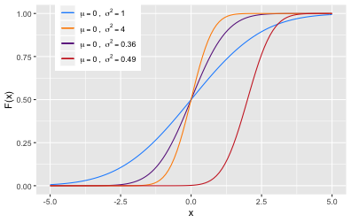

Normal distribution
Continuous random variable \(X\) with normal distribution
- probability density function
\[f(x; \mu, \sigma) = \frac{1}{\sigma \sqrt{2 \pi}} e^{ -\frac{1}{2} \left( \frac{x-\mu}{\sigma} \right)^2 }\]
\(x \in \mathbb{R}, \mu \in \mathbb{R}, \sigma \in \mathbb{R}_+\)
- mean \(\mathbb{E}(X)=\mu\), variance \(\mathbb{V}ar(X)=\sigma^2\)
\[X \thicksim \mathcal{N}(\mu, \sigma^2)\]
- cumulative distribution function
\[F(x) = \Phi\left(\frac{X-\mu}{\sigma}\right), \Phi(z) = \frac{1}{\sqrt{2\pi}} \int_{-\infty}^z e^{-\frac{t^2}{2}}\mathrm{d}t \]
